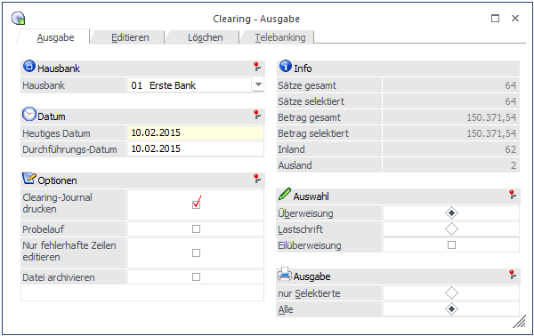

Im Menüpunkt…
1 WinLine FIBU
1 Buchen
1 Zahlungsverkehr
1 Clearing
… werden die im Zahlungsverkehr erzeugten Zahlungen in das Format konvertiert, welches von den Banken eingelesen werden kann. Dabei gibt es die Unterscheidung zwischen dem Dateiformat V2 und V3 (EDIFACT). In welchem Format die Ausgabe erfolgen soll, wird im Bankenstamm definiert (nähere Informationen entnehmen Sie bitte dem WinLine Allgemein - Handbuch).
Achtung
Ab 01.01.2002 gilt in Österreich nur mehr das V3-Format! Das V2-Format unterstützte nur ATS und lief somit mit 31.12.2001 aus.

Das Fenster "Clearing-Ausgabe" ist in mehrere Teilbereiche unterteilt, die auch unterschiedliche Funktionen aufweisen.
Ausgabe
Im Bereich "Ausgabe" erfolgt die effektive Ausgabe der Daten im gewünschten Dateiformat.
Ø Hausbank
Standardmäßig wird hier die Option "Alle" vorgeschlagen. Das würde bedeuten, dass alle Zahlungen für alle Banken durchgeführt werden würden.
Durch Drücken der Tastenkombination ALT + Pfeil-nach-Unten wird eine Liste aller im Bankenstamm angelegter Banken angezeigt. Mit der Pfeil-nach-Unten-Taste kann die gewünschte Bank gewählt werden. Durch Drücken der RETURN-Taste wird die Bank übernommen.
Hinweis
Ist bei einer Hausbank ein Berechtigungsprofil hinterlegt, welches einem Benutzer untersagt die Bank zu bearbeiten, so wird dieses Berechtigungsprofil auch hier abgeprüft.
D.h. die "gesperrte" Hausbank steht in der Auswahllistbox nicht zur Verfügung.
Wird der Eintrag "00 Alle" gewählt, so sind in weiterer Folge nur jene Beträge ersichtlich und zu bearbeiten, für die der Benutzer die Berechtigung hat; also nur jene Beträge die von Banken überwiesen/eingezogen werden sollen, für die der Benutzer die Berechtigung hat.
Ø Heutiges Datum
Eingabe des Datums, mit dem die Ausgabe in CLEARING-Format durchgeführt wird. Durch Drücken der F3-Taste wird das aktuelle Systemdatum übernommen.
Ø Durchführungs-Datum
Eingabe des Datums, mit dem die Transaktionen bei der Bank durchgeführt werden sollen.
Es ist zu beachten, dass es für SEPA-Lastschriften unterschiedliche Vorlaufzeiten bei den Banken gibt.
Ø Clearing-Journal drucken
Bei aktiver Checkbox wird bei Ausgabe der Clearing-Datei ein Clearing-Journal, auf dem alle in der Datei befindlichen Datensätze aufgeführt sind, ausgegeben.
Ø Probelauf
Aktiviert man diese Checkbox, so wird bei der Ausgabe zwar eine Datei erzeugt, im Bankenstamm jedoch wird die Bestandsnummer nicht erhöht (d.h. man erhält bei der nächsten Ausgabe nochmals dieselbe Nummer). Weiters werden die Clearingzeilen nicht gelöscht und können ein weiteres Mal verwendet werden.
Ø Nur fehlerhafte Zeile editieren
Ist diese Checkbox aktiv, werden bei Anwahl des Registers "Editieren" in der Tabelle nur fehlerhafte Zeilen dargestellt. D.h. Zeilen, in denen z.B. die Bankverbindungen usw. nicht stimmen.
Gilt nur für Deutschland:
Zeilen, in denen die Schlüsselzahlen nicht korrekt angegeben sind, werden ebenfalls angezeigt.
Ø Datei archivieren
Wenn diese Option aktiviert wird, dann wird mit der Durchführung des Zahlungsverkehrs auch ein Archiveintrag erstellt, in dem die Clearing-Datei, das Clearing-Journal und der Datenträgerbegleitzettel zusammengefasst werden.
Folgende Informationsfelder sind vorhanden:
Ø Sätze gesamt
Hier wird die Anzahl der Datensätze (Überweisungen / Lastschriften) angezeigt, die im gesamten Clearing enthalten sind.
Ø Sätze selektiert
Hier wird die Anzahl der Datensätze angezeigt, die aufgrund der Selektion überwiesen / eingezogen würden.
Ø Betrag gesamt
Hier wird der Betrag aller in der Clearingdatei befindlichen Überweisungen / Lastschriften in Summe angezeigt
Ø Betrag selektiert
Hier sehen Sie die Summe der Überweisungen, die aufgrund der getätigten Selektion ausgegeben würden.
Ø Inland
Hier sehen Sie die Anzahl der Inlandsüberweisungen
Ø Ausland
Hier sehen Sie die Anzahl der Auslandsüberweisungen
Auswahl
Die Ausgabe von Überweisungs- und Lastschriftdatei erfolgt getrennt voneinander. Hier wird festgelegt, für welchen Bereich die Datei bei Bestätigen mit OK erstellt werden soll.
ü Überweisung:
In der
Übergabedatei befinden sich Zahlungen.
ü Lastschrift:
In der
Übergabedatei befinden sich Kundenforderungen - Bankeinzüge.
Ø Eilüberweisung
Ist diese Option aktiviert, wird das Kennzeichen URGP in die XML-Datei übernommen. Für die ausgewählte Hausbank kann das Flag "Eilüberweisung" nur gesetzt werden, wenn im Bankenstamm die dafür zulässige Rulebook-Version hinterlegt ist.
Ausgabe
Hier kann entschieden werden, in welchem Umfang der Ausdruck der vorhandenen Daten erfolgen soll:
ü nur selektierte
Es werden alle
Zeilen ausgegeben, die entweder in den Gesamtbetrag (aus dem Register Editieren)
passen oder die im Fenster Clearing Editieren manuell ausgewählt wurden
ü alle
Es werden alle Zeilen
ausgegeben
Buttons
Ø OK
Die Ausgabe wird mit OK gestartet. Über Ausgabe Drucker / Bildschirm wird das Clearing-Journal als Vorschau ausgegeben.
Folgende Optionen können zusätzlich noch eingestellt werden:
Durch Anklicken des Registers EDITIEREN können alle Datensätze nochmals überarbeitet bzw. neue Datensätze hinzugefügt und bestehende Datensätze gelöscht werden.
Durch Anklicken des Registers LÖSCHEN erhalten Sie die Möglichkeit, Clearingsätze zu eliminieren.
Das Register TELEBANKING steht nur dann zur Verfügung, wenn die entsprechenden Einstellungen im Bankenstamm (Telebanking FSI) vorgenommen wurden.
Ø Ende
Das Fenster wird geschlossen.
Ø Löschen
Ist die Registerkarte Löschen angewählt, so können entweder alle oder nur selektierte Sätze gelöscht werden.
Gilt nur für Tschechien:
Der Zahlungsverkehr für Tschechien kann über eine Gemini-Schnittstelle abgewickelt werden. Sind in einem Zahlungsstapel Inlands- und Auslandszahlungen vorhanden, muss die Clearingausgabe zweimal durchgeführt werden. Im ersten Schritt wird eine Clearingdatei mit den Inlandszahlungen ausgegeben. Im zweiten Schritt erfolgt die Ausgabe einer Clearingdatei für die Auslandszahlungen.
Gilt nur für Deutschland:
Im Auslandszahlungsverkehr DTAZV wird die Währung der Hausbank in die Zahlungszeile der Clearingdatei übernommen. Es handelt sich hierbei um das Feld T4a, in dem die Währung des Auftraggeberkontos hinterlegt wird.
Durch Drücken der F5-Taste wird die Ausgabe gestartet. Dabei wird die im Bankenstamm hinterlegte Datei erzeugt. Zusätzlich dazu wird ein Datenträgerbegleitzettel (für die Bank, wenn die Datenübertragung mittels Diskette erfolgt) und ein Clearing-Journal (sofern die Option gesetzt wurde), auf dem alle in der Datei befindlichen Datensätze aufgeführt sind, ausgegeben.
Hinweis
Für den Datenträgerbegleitzettel in Österreich können 2 besondere Variablen angedruckt werden:
Variable 0/62 enthält die Summe der BLZ
Variable 0/63 enthält die Summe aller Kontonummern
Diese Werte können zur zusätzlichen Kontrolle mit angedruckt werden.
Durch Drücken der ESC-Taste wird der Programmpunkt verlassen, die Übergabedatei bleibt bestehen.